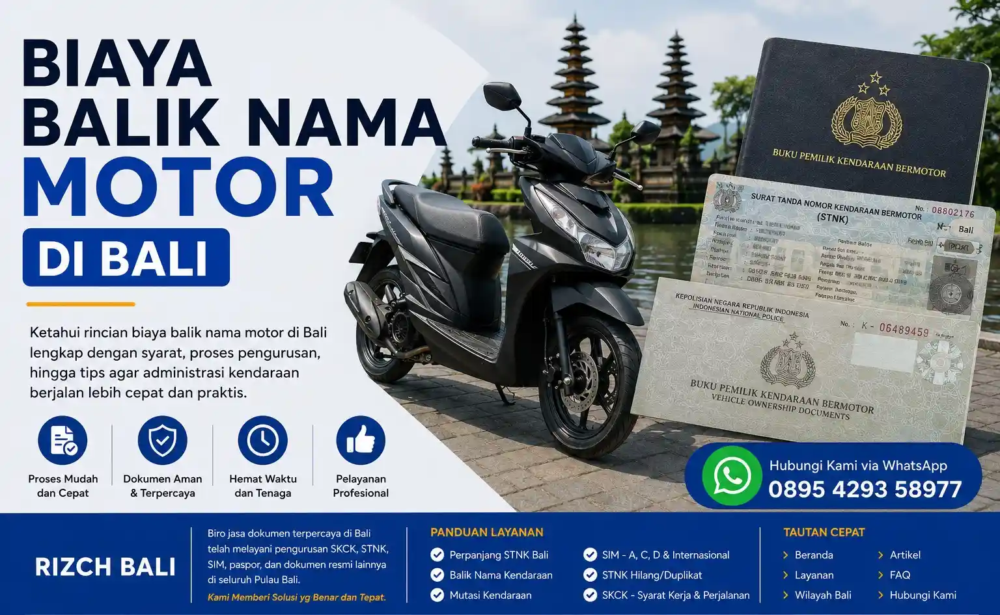

Biaya Perpanjang STNK di Bali Terbaru
Informasi mengenai biaya perpanjang STNK di Bali menjadi salah satu hal yang paling sering dicari oleh pemilik kendaraan setiap tahunnya. Baik kendaraan motor maupun mobil wajib melakukan pembayaran pajak dan pengesahan STNK agar kendaraan tetap legal digunakan di jalan raya. Selain menghindari denda, STNK aktif juga sangat penting untuk berbagai kebutuhan administrasi kendaraan seperti jual beli, balik nama, hingga klaim asuransi.
Di Bali sendiri, biaya perpanjangan STNK dapat berbeda tergantung jenis kendaraan, kapasitas mesin, nilai jual kendaraan, serta status pajak kendaraan tersebut. Kendaraan dengan nilai jual lebih tinggi biasanya memiliki nominal pajak yang lebih besar. Selain itu kendaraan kedua dan seterusnya juga bisa terkena pajak progresif sehingga total pembayaran menjadi lebih tinggi dibanding kendaraan pertama.
Banyak masyarakat kini memilih menggunakan bantuan biro jasa terpercaya seperti Rizch Service untuk membantu proses pengurusan kendaraan menjadi lebih praktis dan efisien, terutama bagi pemilik kendaraan yang memiliki aktivitas padat setiap harinya.
Komponen Biaya Perpanjang STNK
- Pajak Kendaraan Bermotor (PKB)
- SWDKLLJ atau dana wajib kecelakaan lalu lintas
- Biaya administrasi pengesahan STNK
- Biaya TNKB atau plat nomor untuk perpanjangan lima tahunan
- Denda keterlambatan jika pajak telat dibayar
Lakukan pembayaran pajak kendaraan sebelum jatuh tempo untuk menghindari denda keterlambatan dan mempercepat proses pengurusan administrasi kendaraan Anda.
Estimasi Pajak Kendaraan Motor dan Mobil di Bali
Estimasi biaya perpanjangan STNK motor di Bali umumnya lebih rendah dibanding kendaraan mobil. Hal ini dipengaruhi oleh nilai jual kendaraan dan besaran pajak yang dikenakan. Motor dengan kapasitas mesin kecil biasanya memiliki nominal pajak yang lebih ringan dibanding motor sport atau kendaraan premium.
Sedangkan untuk kendaraan mobil, biaya perpanjangan STNK biasanya lebih tinggi karena nilai jual kendaraan yang lebih besar. Kendaraan keluarga, SUV, maupun mobil premium memiliki nominal pajak yang berbeda tergantung spesifikasi kendaraan masing-masing.
Selain biaya pajak tahunan, pemilik kendaraan juga perlu memperhatikan jadwal perpanjangan lima tahunan karena proses ini melibatkan penggantian plat nomor kendaraan dan cek fisik kendaraan di Samsat.
Syarat Perpanjang STNK di Bali
Sebelum melakukan pengurusan STNK, penting untuk mempersiapkan seluruh dokumen agar proses berjalan lancar tanpa hambatan. Kelengkapan dokumen menjadi salah satu faktor penting dalam pengurusan administrasi kendaraan.
Syarat Perpanjangan Tahunan
- KTP asli pemilik kendaraan
- STNK asli kendaraan
- Notice pajak kendaraan sebelumnya
- Fotokopi identitas dan STNK
Syarat Perpanjangan Lima Tahunan
- KTP asli pemilik kendaraan
- BPKB asli kendaraan
- STNK asli
- Cek fisik kendaraan
- Fotokopi dokumen kendaraan
Untuk kendaraan atas nama perusahaan atau kendaraan milik orang lain biasanya diperlukan surat kuasa dan dokumen pendukung tambahan sesuai ketentuan yang berlaku.
Cara Perpanjang STNK di Bali
Saat ini ada beberapa metode yang dapat digunakan masyarakat Bali untuk melakukan perpanjangan STNK sesuai kebutuhan masing-masing.
Datang Langsung ke Samsat
Cara paling umum adalah datang langsung ke kantor Samsat sesuai domisili kendaraan. Pemilik kendaraan perlu mengikuti antrean administrasi hingga proses pembayaran selesai.
Menggunakan Samsat Keliling
Samsat keliling menjadi solusi praktis bagi masyarakat yang ingin melakukan pembayaran pajak tahunan tanpa harus datang ke kantor Samsat utama.
Menggunakan Bantuan Jasa Pengurusan
Banyak masyarakat memilih menggunakan bantuan jasa pengurusan kendaraan karena lebih praktis dan menghemat waktu. Terutama bagi pekerja sibuk, pemilik usaha, maupun warga luar Bali yang memiliki kendaraan di Bali.
Rizch Service membantu pengurusan administrasi kendaraan dengan proses yang lebih mudah dipahami dan informasi yang jelas sesuai kebutuhan pelanggan.
Kenapa Banyak Orang Menggunakan Biro Jasa?
Penggunaan biro jasa kendaraan di Bali semakin meningkat karena banyak masyarakat ingin proses administrasi yang lebih praktis dan efisien. Selain membantu menghemat waktu, penggunaan biro jasa juga membantu mengurangi risiko kekurangan dokumen saat proses pengurusan berlangsung.
Hemat Waktu dan Tenaga
Pemilik kendaraan tidak perlu antre terlalu lama atau berpindah loket selama proses pengurusan dilakukan.
Proses Lebih Praktis
Seluruh dokumen akan dicek terlebih dahulu sehingga proses administrasi menjadi lebih tertata dan minim kendala.
Cocok untuk Kendaraan Luar Daerah
Kendaraan luar daerah sering memiliki prosedur tambahan sehingga penggunaan bantuan jasa menjadi solusi yang lebih praktis.
Tips Sebelum Bayar Pajak Kendaraan
Periksa Dokumen Kendaraan
Pastikan seluruh dokumen kendaraan lengkap sebelum melakukan pengurusan agar proses berjalan lebih cepat.
Hindari Keterlambatan Pembayaran
Membayar pajak tepat waktu membantu menghindari denda dan menjaga legalitas kendaraan tetap aktif.
Pilih Layanan Terpercaya
Jika menggunakan jasa bantuan pengurusan, pilih layanan yang memiliki komunikasi jelas dan informasi yang transparan.
Artikel Terkait
FAQ Biaya Perpanjang STNK di Bali
Biaya perpanjang STNK motor di Bali tergantung jenis kendaraan dan nominal pajak kendaraan masing-masing. Umumnya meliputi PKB, SWDKLLJ, dan biaya administrasi pengesahan.
Ya, keterlambatan pembayaran pajak kendaraan akan dikenakan denda sesuai aturan yang berlaku. Besaran denda dihitung berdasarkan lama keterlambatan pembayaran.
Bisa, biasanya diperlukan surat kuasa dan dokumen pendukung tambahan sesuai kebutuhan administrasi kendaraan. Penggunaan jasa biro juga menjadi solusi praktis untuk diwakilkan.
Jika dokumen lengkap dan tidak ada kendala, proses perpanjang STNK tahunan biasanya dapat selesai dalam waktu relatif singkat. Untuk perpanjangan lima tahunan memerlukan waktu lebih lama karena ada proses cek fisik kendaraan.
Ya, kendaraan kedua dan seterusnya atas nama pemilik yang sama biasanya dikenakan pajak progresif. Besaran tarif progresif mengikuti ketentuan peraturan daerah yang berlaku di Bali.
Butuh Bantuan Perpanjang STNK di Bali?
Konsultasikan kebutuhan pengurusan kendaraan Anda bersama Rizch Service Bali untuk proses yang lebih praktis, efisien, dan mudah dipahami.
Konsultasi via WhatsApp